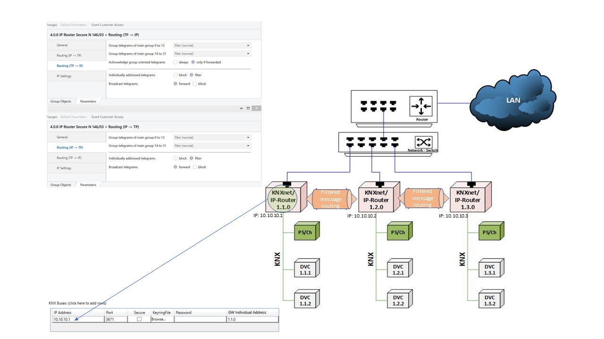

Small-sized KNX Installation

Message routing configuration
- Add dummy devices at KNX line 1.1.0 to which all the Desigo CC needed group addresses of the other KNX lines will be linked. In this way, the ETS generates the correct filter tables automatically.
- Do not use the option “forward all”.
- If filtered message routing is activated on the KNXnet/IP routers, in the KNX adapter, you must configure one KNXnet/IP router only.

Communication overload
Message forwarding must be set suitably in order to avoid traffic overload and a collapse of the KNX line and KNX adapter due to message increase.